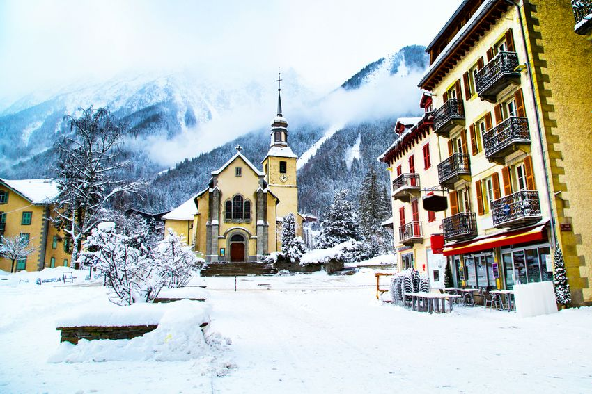
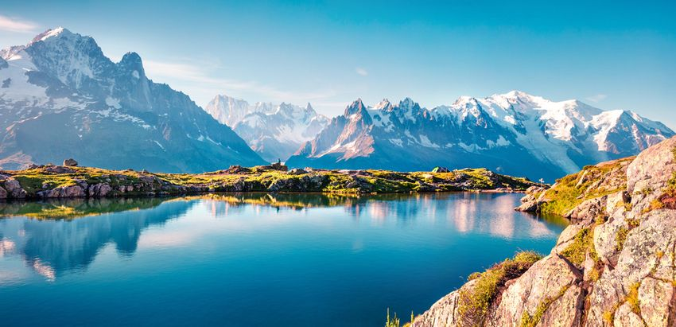
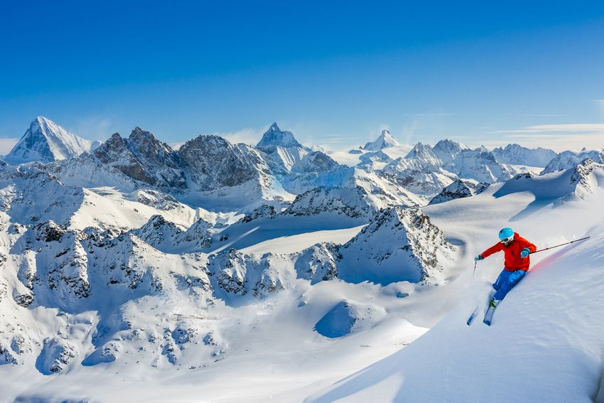
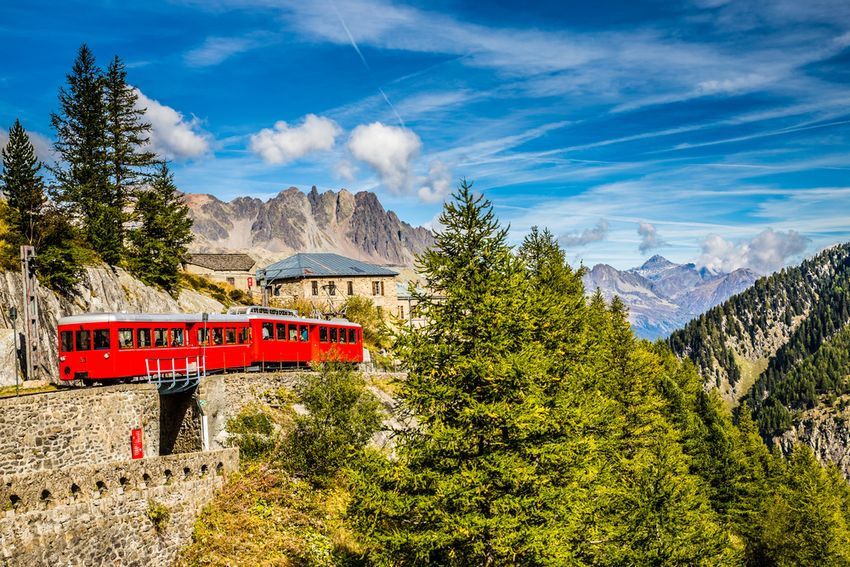

Chamonix peut être fière d’accueillir le toit de l’Europe à savoir le Mont Blanc. C’est un spectacle époustouflant fait de cimes blanches que nous offre cette célèbre ville de Haute-Savoie. N’hésitez pas à y louer un chalet pour profiter des activités, paysages et plats traditionnels de Chamonix.
Chamonix-Mont-Blanc ou plus simplement Chamonix est une commune située dans le département de Haute-Savoie et comprenant pas moins de 16 villages différents. Chamonix est connue pour être l’une des villes européennes ayant l’altitude la plus élevée et cela revient au fait qu’elle abrite le Mont-Blanc qui est par ailleurs l’un des sites naturels le plus visités au monde.
La ville est aussi connue pour être l’une des plus vastes de France. Chamonix a des frontières avec la Suisse et l’Italie avec lesquelles elle est reliée par le tunnel du Mont-Blanc.
L’avantage de Chamonix c’est qu’il y a bien plus à y voir que les sports d’hiver. L’Aiguille du Midi est un des points culminants de Chamonix qui permet d’avoir une vue époustouflante sur les alentours. Un téléphérique peut conduire jusqu’à ce sommet situé à plus de 3800 m d’altitude pour vous offrir cette vue qui vous restera longtemps en mémoire.
De ce sommet, vous pourrez d’ailleurs admirer la vallée Blanche qui contient des glaciers enneigés skiables mais situés hors piste. Pour admirer l’Aiguille du Midi, rien ne vaut « Le pas dans le vide », une station d’observation entièrement vitrée qui porte bien son nom tant elle donne l’illusion d’être suspendu au-dessus du vide.
Les plus aventuriers pourront se lancer à la conquête du Mont Blanc qui est le plus haut sommet montagneux d’Europe occidentale. Une bonne préparation et un matériel approprié sont nécessaires pour cette ascension. Même sans la gravir, cette imposante montagne force le respect et l’admiration de tous ceux qui ont la chance de la contempler de près.
Pour observer de près tout ce que Chamonix a à vous offrir, n’hésitez pas emprunter le train de Montenvers qui traverse les sommets montagneux et permet d’accéder à une vue panoramique sur la Mer de Glace, un glacier alpin long de plusieurs kilomètres.
Pour admirer les majestueuses montagnes de Chamonix, pensez aussi à faire du parachute ou du parapente car cette activité est très pratiquée dans la ville savoyarde.
Si vous voulez aussi faire de votre séjour à Chamonix un séjour culturel pour enrichir votre savoir en matière d’histoire, on vous conseille de visiter Le Temple de la Nature, un bâtiment qui a été construit au 18ème siècle et qui revient sur les illustres personnalités qui ont élu domicile dans ce lieu qui a été l’un des premiers refuges alpins à Chamonix.
Le choix en matière de restauration à Chamonix est assez important puisqu’on a droit à de petits bistros sympas pour manger une cuisine généreuse et authentique. Vous pouvez aussi faire le choix de casser la croûte dans des lieux de restauration rapide comme le Bar des Glaciers. On vous conseille enfin de vous offrir un dîner typiquement savoyard dans un restaurant à la décoration rustique comme Les Tables du chef ou Le panier des 4 saisons.
Bien qu’en raison de son caractère inhospitalier, Chamonix n’a que rarement été habitée, elle a appartenu à de nombreux peuples préhistoriques dont les Celtes et les Ceutrons (un peuple gaulois) avant de devenir la propriété de l’Empire romain puis plus tard, celle du comté de Genève qui la céda au 11ème siècle à l’abbaye bénédictine de Saint-Michel de la Cluse.
Le prieuré de Chamonix est ainsi fondé au 11ème et il perdurera jusqu’au 18ème siècle. Chamonix est plus connue sous le nom de Chamouny au 18ème siècle. Il s’agissait alors d’un petit village qui vivait principalement de l’agriculture et qui faisait partie du royaume de Sardaigne. C’est vers cette même époque que les touristes commencent à découvrir le lieu et à y pratiquer de l’alpinisme.
Ce n’est que vers la fin du 18ème siècle avec l’annexion de la Savoie à la France que Chamonix devient française. Elle passe ensuite brièvement aux mains de la Sardaigne avant de redevenir française en 1860. L’activité touristique se développe fortement au cours du début du siècle dernier pour que Chamonix devienne aujourd’hui la station de sports d’hiver tant appréciée que nous connaissons.
